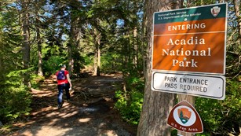

Mt. Moosilauke
Mount Moosilauke, at 4,802 feet, is the western-most 4,000-footer in NH. The alpine summit, on a clear day, affords hikers stunning views, to the east, of the Franconia Ridge and Presidentials, and to the west, the Green Mountains of Vermont and, in the distance, the Adirondacks in New York State.

Mt. Moriah
A part of the Carter-Moriah Range, Mount Moriah (4,049 ft.), boasts a ledgy summit with views of the surrounding area.

Acadia National Park
Acadia National Park protects the natural beauty of the highest rocky headlands along the Atlantic coastline of the United States, an abundance of habitats, and a rich cultural heritage.